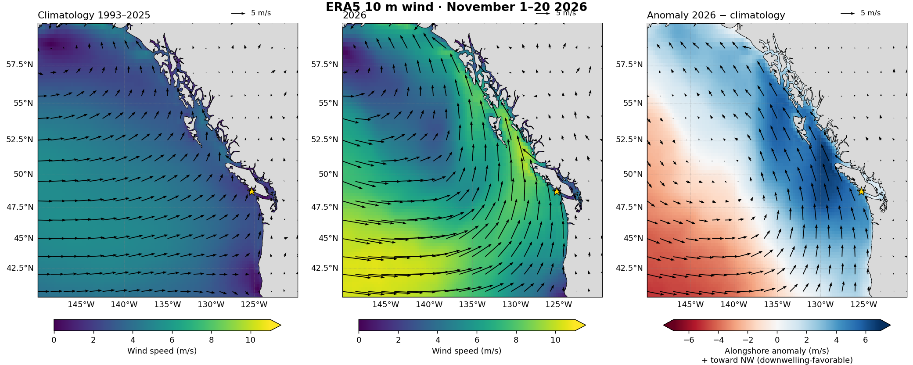
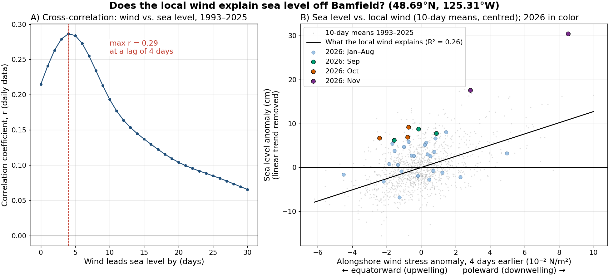
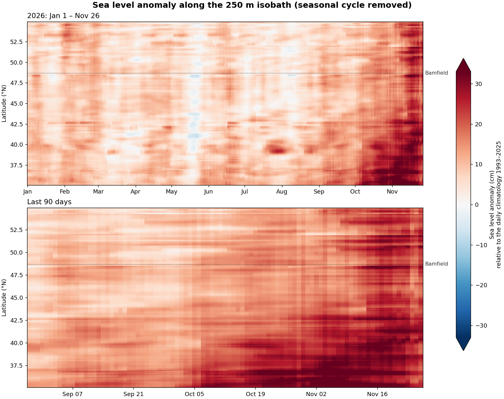

Key points
- A record. Sea level off Bamfield reached +41.4 cm on 17 Nov 2026, the highest daily value since 1993. The November 1–26 mean, +29.6 cm, is the highest of 34 years (a typical year: +4.7 cm).
- The winds played a role. Poleward, downwelling-favorable winds were unusually strong: November 1–21 mean 4.6 m/s, against 1.4 m/s in a typical year, the 2nd strongest since 1993.
- But the wind alone is not enough. In normal years the local wind explains only part of the sea level variability off Bamfield (R² = 0.31). In 2026 sea level was well above what its wind explains: already in September–October, with weak or even upwelling-favorable winds, and again in November. Another forcing added to the local wind.
- No clear wave propagation. Along the coast from 35°N to 55°N the sea level anomaly does not show a clear propagation of a wave.
1. The highest sea level on record off Bamfield
Sea level off Bamfield reached +41.4 cm on 17 Nov 2026, the highest daily value since 1993. The November 1–26 mean, +29.6 cm, is the highest of 34 years, against +4.7 cm in a typical year. The rise began earlier: September 2026 was already the highest September in the record. The top panel shows sea level (dotted line: its usual seasonal cycle; dashed red line: the long-term linear trend, –); the bottom panel, the wind along the coast.
Daily SSHA at the nearest DUACS grid point with data.
Bottom panel: daily ERA5 10 m wind at the nearest ERA5 grid point (), projected onto the alongshore direction (315°, toward the northwest; red arrow on the wind maps). Positive: poleward wind, downwelling-favorable. Negative: equatorward wind, upwelling-favorable. The dotted line is the daily climatology (1993–2025, 10-day running mean), repeated every year, to compare any year with the usual seasonal cycle.
2. Downwelling-favorable winds played a role
ERA5 10 m wind: monthly mean
In November 2026 the winds along the coast blew strongly toward the northwest (poleward). These winds are downwelling-favorable: they push water toward the coast and raise sea level.
Left: usual winds for these days (climatology 1993–2025). Right: the latest month. Colors: mean wind speed; arrows: direction and strength of the mean wind (same scales in both maps). ★ = Bamfield. Red arrow: alongshore direction used for the wind in the time series.

3. The local wind alone cannot explain the rise
The local wind explains only part of the sea level off Bamfield, and in 2026 sea level rose far above what the wind alone can produce.
On the west coast, poleward winds push water toward the coast (Ekman transport is directed to the right of the wind in the Northern Hemisphere) and raise sea level. To measure how much of the sea level the local wind explains, we compared the daily alongshore wind with sea level (the two series of the first figure) over 1993–2025. Their cross-correlation (A) peaks when the wind leads sea level by 4 days (r = 0.44). Using that lag and consecutive 10-day means (B; blocks that do not overlap, not a running mean), the usual relationship between wind and sea level (grey points and black line) explains only about 50% of the variability (R² = 0.50).
In 2026 (colored points), sea level in September and October was already in the upper part of the relationship, but still inside the cloud of points, while the winds were weak or upwelling-favorable (see also the time series above). In November the winds became strongly downwelling-favorable, but sea level rose far above what the relationship predicts, and one of the November points lies outside the cloud of previous years. Another forcing added to the local wind.
Both series are the daily series of the first figure: SSHA off Bamfield (DUACS, relative to the 1993–2025 mean) and the ERA5 10 m wind projected onto the red arrow (m/s). No climatology is removed, so the seasonal cycle is included. Before the analysis, the long-term change (the slope of a linear trend fitted over 1993–2025) is removed from all years, for both sea level and wind. Panel A uses the daily series of 1993–2025; panel B uses 10-day means, with the wind shifted by the lag of maximum correlation.

4. No clear propagation of a wave along the coast
Along the coast, the 2026 sea level anomaly does not show a clear wave travelling north.
During El Niño, coastally trapped Kelvin waves have been tracked travelling north along this coast at 2–3 m/s (Meyers et al., 1998). To look for such a wave, we followed the sea level anomaly day by day along the 200 m isobath (near the shelf break) from 35°N to 55°N.
No clear propagating band appears in 2026. Instead, positive anomalies build up first south of about 42°N in early October and spread slowly northward through November, with pulses that raise sea level along the whole coast at the same time (vertical bands).
Each point is the daily anomaly relative to the daily climatology of that same point (1993–2025, 10-day running mean), so the seasonal cycle is removed. The long-term trend is not removed, so the sea level rise since 1993 adds a few centimetres to the 2026 anomalies everywhere. Top: the whole year. Bottom: the last 90 days.

5. Day by day
Each frame is one day. The three panels move together: the date in the title is the day shown on the map and the day marked on both panels to the right.
Left Map: sea surface height anomaly and wind
- Colors: sea surface height anomaly (SSHA, cm) relative to the 1993–2025 mean at each point. Red means sea level is higher than average for that location; blue, lower. The color scale is the same in every frame.
- Black arrows: ERA5 10 m wind, daily mean.
- Green line: the 200 m isobath (near the shelf break), along which the Hovmöller (bottom right) is taken.
- ★: the grid point off Bamfield used for the time series (top right).
Top right SSHA time series off Bamfield
- Daily SSHA (cm) at the ★ point, for the whole year.
- Red dot and dashed line: the frame's date, with its value written in the top-left corner.
Bottom right Hovmöller along the 200 m isobath
- SSHA near the shelf break, on the 200 m isobath (green line on the map), from 35°N (central California) to 55°N (northern British Columbia / southeast Alaska).
- Horizontal axis: time (same as the panel above). Vertical axis: latitude. Each vertical strip is one day; same colors as the map.
- Black vertical line: the frame's date. Dotted horizontal line: latitude of Bamfield.
Datasets
Copernicus Marine Service — DUACS sea level
- Dataset: Global Ocean Gridded L4 Sea Surface Heights and Derived Variables, multi-satellite DUACS
product. Reprocessed (“MY”,
SEALEVEL_GLO_PHY_L4_MY_008_047) and near-real-time (“NRT”,SEALEVEL_GLO_PHY_L4_NRT_008_046); datasetscmems_obs-sl_glo_phy-ssh_my_allsat-l4-duacs-0.125deg_P1Dandcmems_obs-sl_glo_phy-ssh_nrt_allsat-l4-duacs-0.125deg_P1D. - Data access: MY product page · NRT product page
- DOI: 10.48670/moi-00148 (MY) · 10.48670/moi-00149 (NRT)
- Resolution: 0.125° × 0.125°, daily.
- Variable used: sea level anomaly (
sla). MY is used where available; NRT fills the most recent days. - Reference period: SSHA on this page is relative to the 1993–2025 mean time mean at each grid point
ECMWF / Copernicus Climate Change Service — ERA5
- Dataset: ERA5 hourly data on single levels from 1940 to present; 10 m wind components
(
u10,v10). - Data access: Climate Data Store
- DOI: 10.24381/cds.adbb2d47
- Resolution: 0.25° × 0.25°, hourly; averaged here to daily means.
- Note: ERA5 is released with a delay of about 5 days, so the most recent frames of the video may have no wind arrows.
- How to cite: Copernicus Climate Change Service (2023): ERA5 hourly data on single levels from 1940 to present. Copernicus Climate Change Service (C3S) Climate Data Store (CDS). DOI: 10.24381/cds.adbb2d47
References
- Meyers, S. D., A. Melsom, G. T. Mitchum, and J. J. O'Brien (1998). Detection of the fast Kelvin wave teleconnection due to El Niño–Southern Oscillation. Journal of Geophysical Research: Oceans, 103(C12), 27655–27663. https://doi.org/10.1029/98JC02402